阅读主线
- 先看清单条请求内部的 Prefill 与 Decode；
- 再理解单请求串行为何在低负载下合理、在并发到达时为何产生排队；
- 客户端可以同时发请求，但 Serving Runtime 仍可能一次只运行一条序列；
- 当多条序列需要共享同一个模型和 GPU 时，Batching 成为提高 aggregate throughput 的核心机制；
- Batching 随后暴露长度差异、Prefill / Decode 混合和 KV Cache 内存管理问题；
- ORCA、PagedAttention 与 vLLM 正是在这些约束下逐步形成的一套高吞吐 Serving 思路；
- 最后再看具体 Runtime 与模型架构的兼容性，例如 Ollama / llama.cpp 对 Qwen3.5 hybrid state 的并行保护。
完整逻辑链：为什么最后会走到 Continuous Batching？
Continuous Batching 不是孤立的“性能技巧”，而是在线 LLM 服务面对持续并发请求后自然产生的一种执行组织方式。
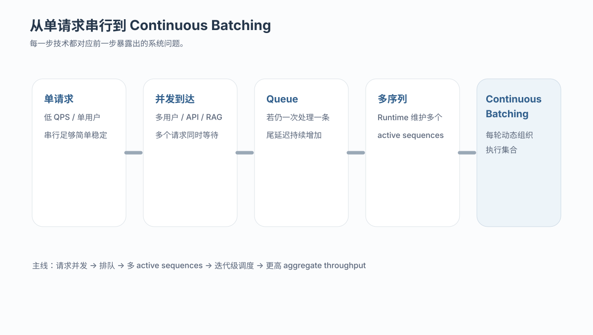
一次 LLM 请求到底怎样运行？
以标准的生成式请求为例，可以粗略拆成五步：请求进入服务端、tokenize、Prefill、Decode Loop、返回结果。真正决定 Serving 特征的是 Prefill 与 Decode。
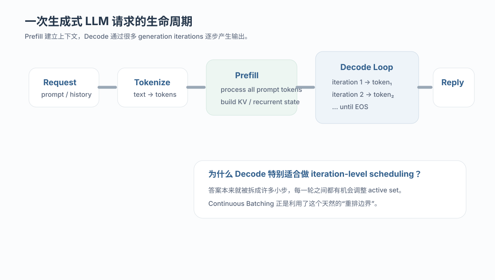
1.1 Prefill：处理整段输入上下文
Prompt 可能包含 system prompt、对话历史、检索结果或代码上下文。Prefill 阶段会一次性处理这些输入 token，并建立后续生成需要的中间状态。标准 Transformer 主要建立 KV Cache；Hybrid / recurrent 架构还可能维护额外 recurrent state。
1.2 Decode：答案不是一次性生成
自回归生成通常每轮产生一个或少量新 token。新 token 被追加到序列后，再进入下一轮。因此一个几百 token 的答案会经历大量 generation iterations。
Prompt
↓ tokenize
Prefill(prompt tokens)
↓ build cache / state
Decode step 1 → token₁
Decode step 2 → token₂
Decode step 3 → token₃
...
Decode step T → EOS最基础的 Serving 方式：一条请求跑完，再处理下一条
串行推理并不是错误设计。对本地单用户、低 QPS 或离线调试，它最简单、资源占用可控、行为也最稳定。问题只会在请求开始重叠时显现。
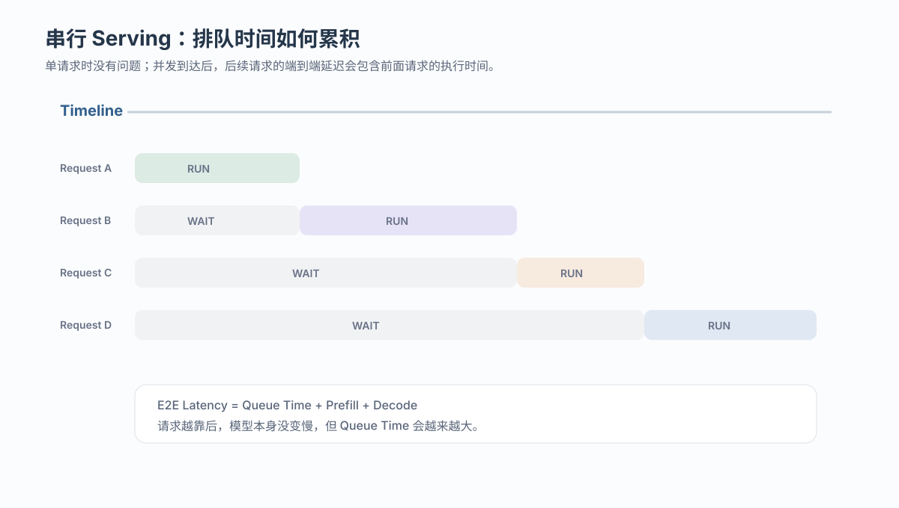
2.1 延迟从“模型时间”变成“排队 + 模型时间”
若请求 A、B、C、D 在相近时间到达，而 Runtime 一次只处理一条，则 B、C、D 的端到端延迟包含前面请求的等待时间：
End-to-End Latency
≈ Queue Time + Prefill Time + Decode Time这也是在线 Serving 与单机跑 benchmark 的根本区别之一：系统不只关心模型计算本身，还要关心请求何时获得执行机会。
2.2 尾延迟为什么会变差？
当到达速率逐渐接近或超过单请求服务速率时，waiting queue 会快速增长。平均延迟可能仍然看起来可接受，但 p95 / p99 会被排队请求显著拉高。在线服务因此通常同时关注 throughput 与 tail latency。
为什么在线 LLM 服务必须开始考虑并发？
只要模型不再独占地服务一个请求，并发就会出现。典型负载包括：多用户聊天、OpenAI-compatible API、RAG 查询、代码助手、自动评测、多 Agent 工作流、后台批处理等。它们的共同特征是：多个请求共享同一份模型权重和同一组计算资源。
多条请求若存在可并行的计算机会，就没有必要完全按照到达顺序逐条执行。
单序列 Decode 每轮工作量较小，多序列合并后更容易形成高效矩阵运算。
模型权重读取、kernel launch、GPU 计算单元都可以在更大的有效工作量下被更充分利用。
3.1 并发优化追求的通常不是“单请求更快”
多个请求共享 GPU 后，单请求 TPOT 可能略有上升，但如果单位时间完成的总请求数或输出 token 数明显提升，系统吞吐仍然更高。因此需要区分：
客户端并发 ≠ Runtime 并发 ≠ GPU Batching
异步 HTTP、线程池或多进程可以让客户端同时提交多个请求，但这只能证明“请求并发到达”。服务端仍可能把请求全部放进 waiting queue，然后逐条执行。
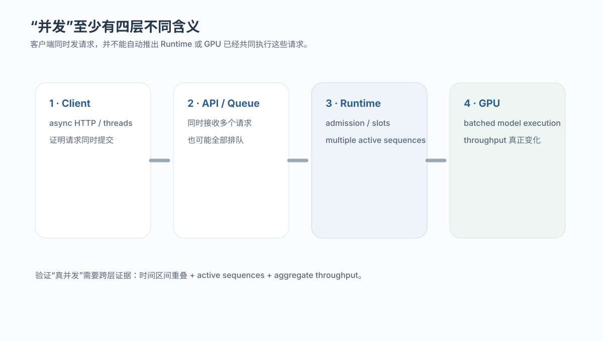
async def main():
await asyncio.gather(
ask("request A"),
ask("request B"),
ask("request C"),
ask("request D"),
)上面的代码只改变请求提交方式。后续是否存在多个 active sequences，取决于 Serving Runtime 的 admission、slot 数量、模型架构限制、KV / state 内存与调度策略。
为什么多请求并发最后自然会走向 Batch？
LLM 的模型权重非常大，而 Decode 每条序列在单个 iteration 中通常只推进一个新 token。若每次 kernel 调用只服务一条序列，GPU 可能处于“小工作量、大模型”的低效状态。将多条 active sequences 当前的工作合并，可以形成更大的矩阵计算，并摊薄固定开销。
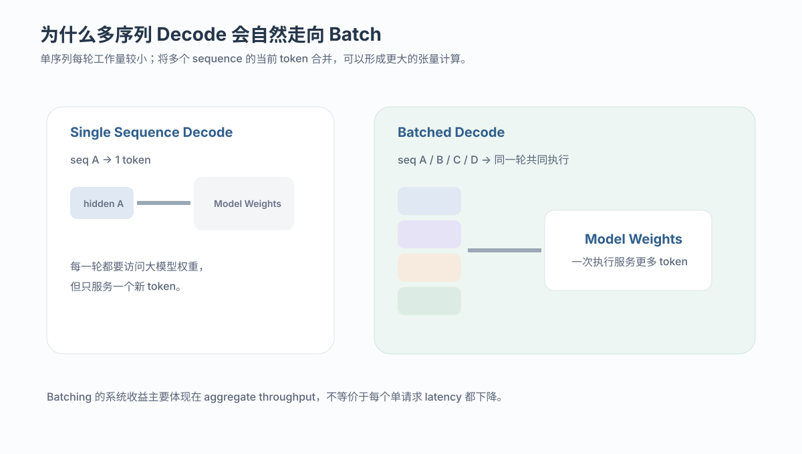
5.1 Batch 与“多线程”不是同一个概念
高吞吐 LLM Serving 通常不是让每个请求各自启动一套完整模型计算，而是让多条序列共享同一模型执行。Batch 是张量计算层面的组织方式，线程 / async 则属于请求提交或 CPU 调度层。
5.2 Batch 的收益来自哪里？
- 更大的矩阵维度通常更容易提高 GPU 计算单元利用率；
- 一次模型权重读取可以服务更多序列；
- kernel launch 等固定开销可由更多 token 共同承担；
- 在线场景可用吞吐换取更可控的排队和尾延迟。
Static、Dynamic 与 Continuous Batching：为什么会一步步演化？
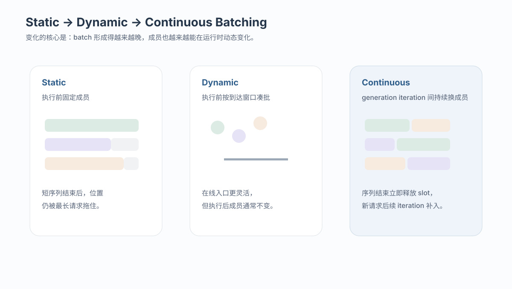
6.1 Static Batching：执行前固定成员
先凑固定的 N 条请求，再一起执行。它适合长度接近的离线任务，但生成式 LLM 输出长度差异很大，短请求完成后容易被最长序列拖住。
6.2 Dynamic Batching：在线入口组批
服务端短暂等待一个时间窗口，把相近时间到达的请求拼成 batch，再统一执行。它解决了“在线请求不会整齐到达”的问题，但 batch 成员通常仍在模型执行前确定。
6.3 Continuous / Inflight Batching：运行过程中也能换成员
LLM 的 Decode 有很多 generation iterations。某条序列完成后，可以立刻释放 slot；新的请求再在后续 iteration 进入 active set。这样就不必等待整批请求全部结束。
| 维度 | Static | Dynamic | Continuous / Inflight |
|---|---|---|---|
| 组批时机 | 执行前 | 执行前，按到达窗口 | 执行后仍可持续变化 |
| 成员是否可变化 | 通常不变 | 通常不变 | 每个 generation iteration 都可更新 |
| 典型问题 | Straggler / Padding | 长生成阶段仍缺乏弹性 | 调度与状态管理更复杂 |
| LLM 在线 Serving | 有限 | 有限 | 核心机制之一 |
为什么 LLM 的 Batch 比普通模型更难调？Prefill 与 Decode 不一样
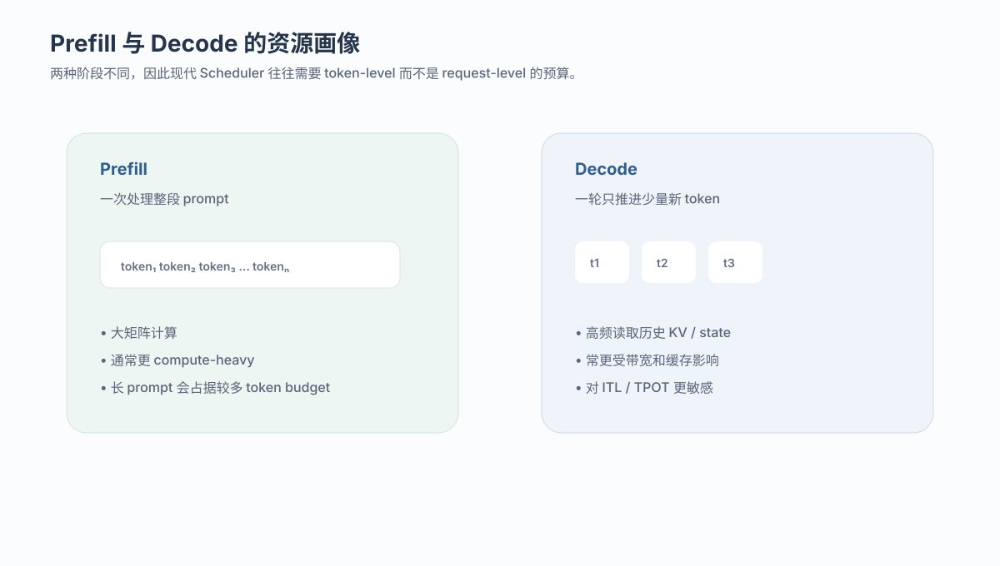
Prefill 一次处理整段输入，通常形成较大的矩阵计算；Decode 每轮只推进少量 token，却会持续读取历史缓存。两者在计算强度、内存访问模式和延迟目标上都不同。
- 长 Prefill 优先：新请求更快建立上下文，但正在 Decode 的请求可能出现 ITL spike；
- Decode 优先：已有请求生成更平滑，但新请求可能长时间等待，TTFT 变差；
- 只按请求数限流：无法区分 512-token prompt 与 64K-token prompt 的巨大成本差异。
因此现代 Serving Engine 更常使用 token budget、KV block budget、max_num_seqs 等资源约束，并在 Prefill 与 Decode 之间动态安排执行。
ORCA：把调度粒度从 Request 降到 Generation Iteration
ORCA 的关键洞察可以概括为：自回归生成本来就是一轮一轮执行，Serving 调度也应该跟着 iteration 走，而不是跟着整条 request 走。
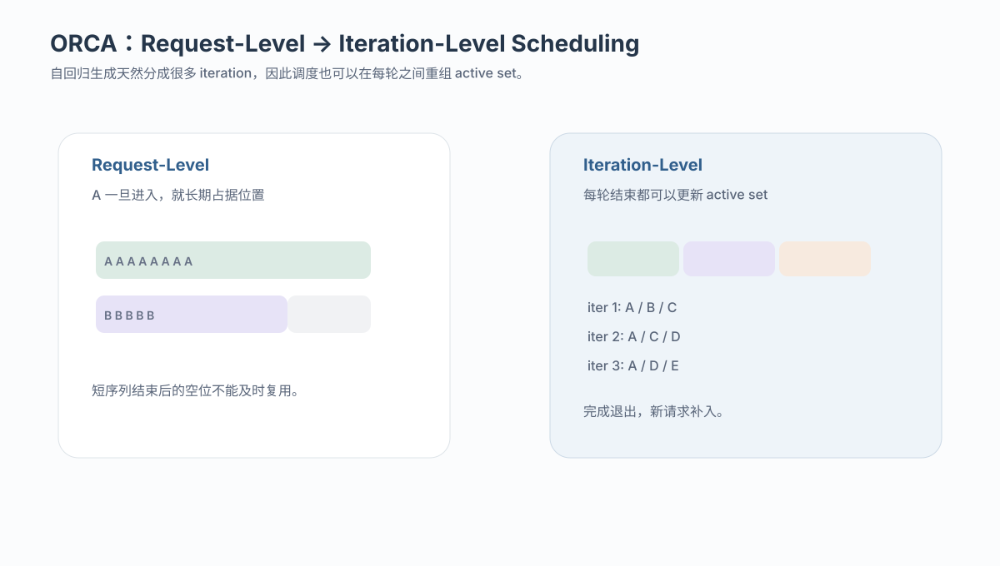
8.1 Request-level 的粗粒度问题
若一条请求一旦开始就长期占据 batch 位置，短请求完成后留下的空间无法及时交给新请求，整个系统容易被长序列拖住。
8.2 Iteration-level Scheduling
每完成一轮 generation iteration，调度器都可以重新决定下一轮的执行集合：哪些序列继续 Decode、哪些已经结束、哪些新请求可以进入。这是 Continuous Batching 的重要系统基础。
KV Cache：为什么“调度得进来”还不等于“显存装得下”？
并发序列越多、上下文越长，KV Cache 占用越大。即使 scheduler 理论上愿意接纳更多请求，显存预算也可能限制 active set 的大小。
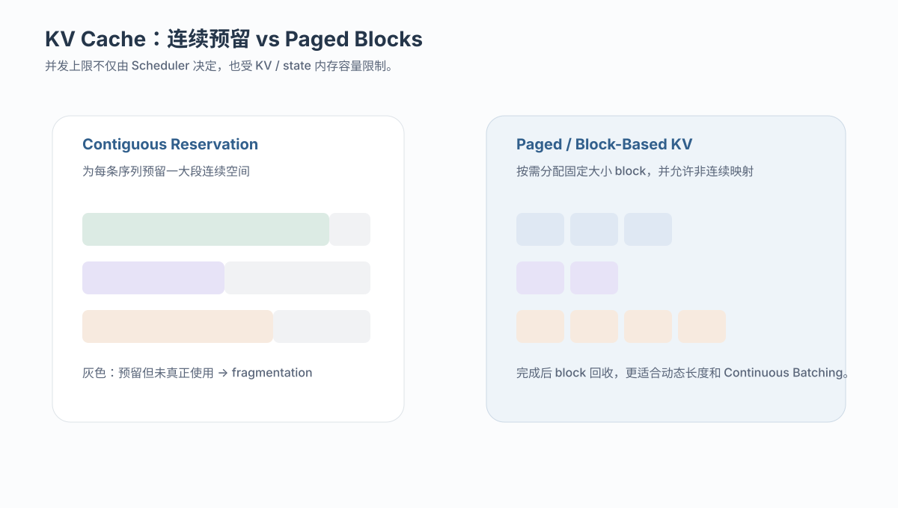
KV memory ∝ active sequences × sequence length × layers
× KV heads × head dimension × bytes per element9.1 为什么传统连续分配会浪费？
每条请求的最终生成长度无法预知。若提前为最大长度预留连续空间，会产生 internal fragmentation；请求不断进入和退出后，还可能形成 external fragmentation。
9.2 PagedAttention 的核心类比
vLLM 将 KV Cache 切成固定大小的 block，并通过逻辑 block 与物理 block 的映射来组织缓存，思想类似操作系统分页。序列不需要占据一整段连续显存，完成后 block 也能更快回收复用。
vLLM 的完整 Serving 逻辑：不仅仅是 PagedAttention
高吞吐 vLLM Serving 可以理解成多个机制的组合，而不是单个优化点。
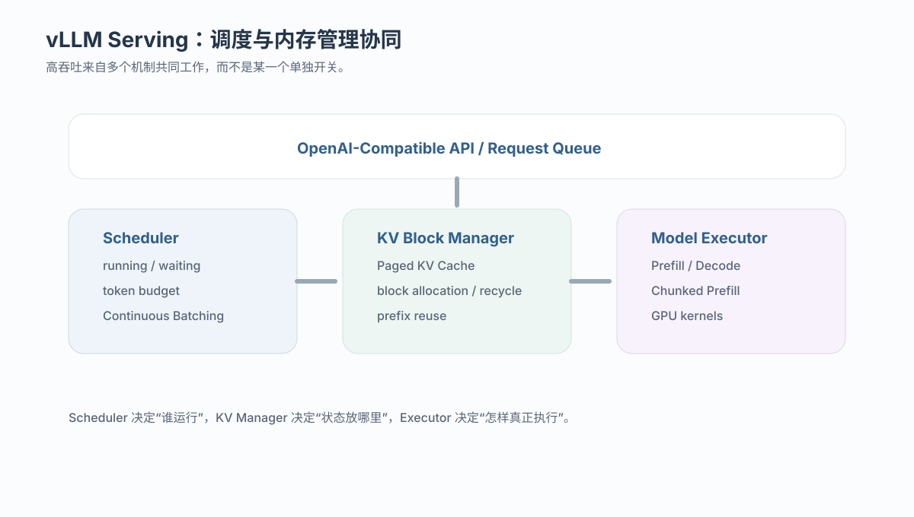
根据当前 running / waiting requests 动态形成每轮执行集合。
以 block 管理动态增长的 KV，减少碎片与过度预留。
把超长 Prefill 切块，使 Decode 与 Prefill 更容易共存。
10.1 Chunked Prefill 为什么重要？
若一个超长 Prompt 的 Prefill 一次性占据整轮执行，已经在 Decode 的请求会被长时间阻塞。Chunked Prefill 将 Prefill 分块，并在 token budget 中与 Decode 混合调度，从而改善 TTFT、ITL 与 GPU 利用率之间的权衡。
10.2 Prefix Caching 在什么场景更有价值？
当大量请求共享相同的 system prompt、文档前缀或固定模板时，可以复用已经计算过的前缀状态，减少重复 Prefill。它优化的是“重复上下文计算”，与 Continuous Batching 的“多请求共同执行”属于不同维度。
10.3 评价 vLLM 时需要看哪些指标？
除了 output tokens/s，还应同时观察 running / waiting requests、KV cache usage、TTFT、ITL / TPOT、queue time、prefill time 与 decode time。只有这样才能判断吞吐提升究竟来自调度、缓存还是负载差异。
Ollama / llama.cpp：并发请求实际经过哪些层？
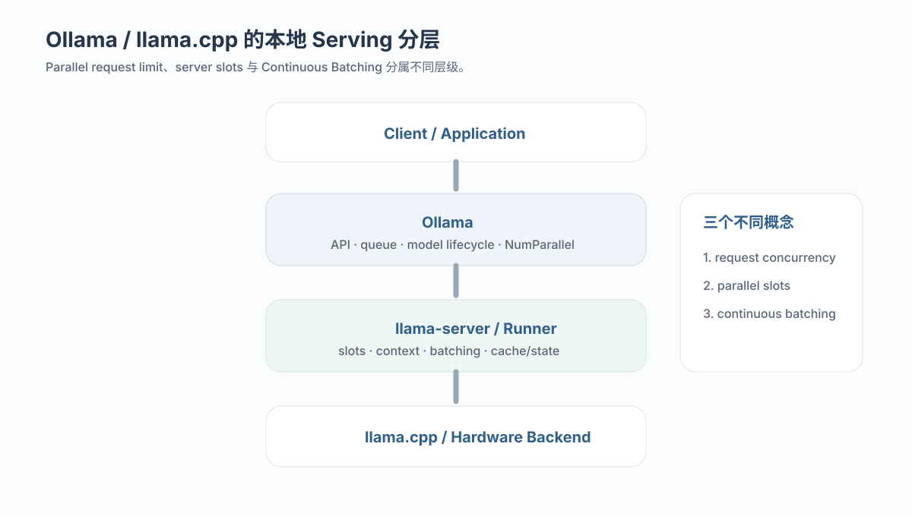
Ollama 提供 API、模型生命周期、队列与并行配置；在 llama-server 路径上，底层 Runtime 进一步管理 slots、context、batching 与模型执行。因此几个常见概念需要分开：
| 概念 | 含义 | 不能直接等价成什么 |
|---|---|---|
OLLAMA_NUM_PARALLEL | 每个模型允许的并行请求容量 / 目标并行度 | 不是固定 GPU batch size |
| Parallel Slots | 可同时维护多少条活跃序列的容量 | 不是每一轮都一定有同样多序列执行 |
| Continuous Batching | active sequences 如何在 generation iteration 间动态进入 / 退出 | 不是客户端 async 开关 |
某一轮真实 batch 大小会由当时的 active sequences、Prefill / Decode 状态、token budget 与内存容量共同决定。因此“Parallel=4”只说明潜在容量，不意味着每一轮固定执行 4 条序列，更不意味着吞吐线性提升 4 倍。
Qwen3.5 + Ollama：为什么设置并行后仍可能只跑 1 条？
这里需要区分模型架构、底层 Runtime 的状态管理问题，以及 Ollama 为避免错误而加入的保护策略。
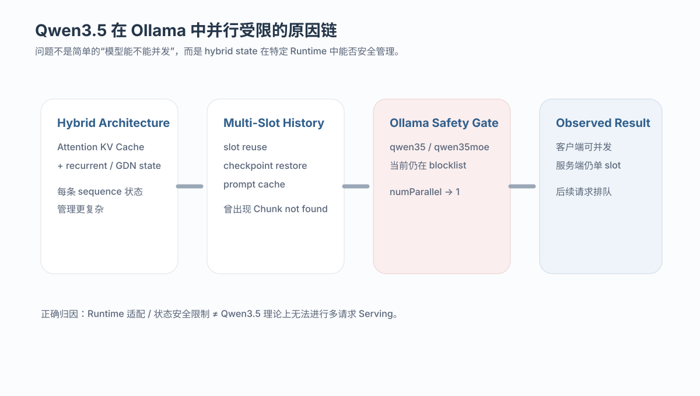
12.1 Qwen3.5 为什么比普通 KV-only Transformer 更复杂？
Qwen3.5 采用 hybrid 架构，模型层中同时包含 Gated DeltaNet / recurrent 路径与 full attention 路径。Serving 时不仅要维护 attention KV Cache，还需要正确维护每条 sequence 的 recurrent state。多 slot、slot reuse、prompt cache 与 checkpoint restore 因此都比普通 Transformer 更容易出错。
12.2 llama.cpp 的历史并行问题
2026 年公开 issue 曾报告 Qwen3.5 在多 parallel slots 与 slot reuse 下发生 Chunk not found，触发点与 context checkpoint restoration 有关。关闭 prompt cache / checkpoint 可作为部分环境下的 workaround，但会牺牲复用收益，也不能代表所有后端都彻底解决。
12.3 Ollama 当前为何主动限制并行？ 状态记录 2026-10-14
当前 Ollama 主分支 server/sched.go 仍将 qwen35 与 qwen35moe 列入“不安全的 num_parallel > 1 架构”集合。即使环境变量给出更大的并行度，scheduler 也会把 numParallel 限制为 1，并记录 architecture does not currently support parallel requests。
Qwen3.5 的并发适配路径：先明确要解决哪一层问题
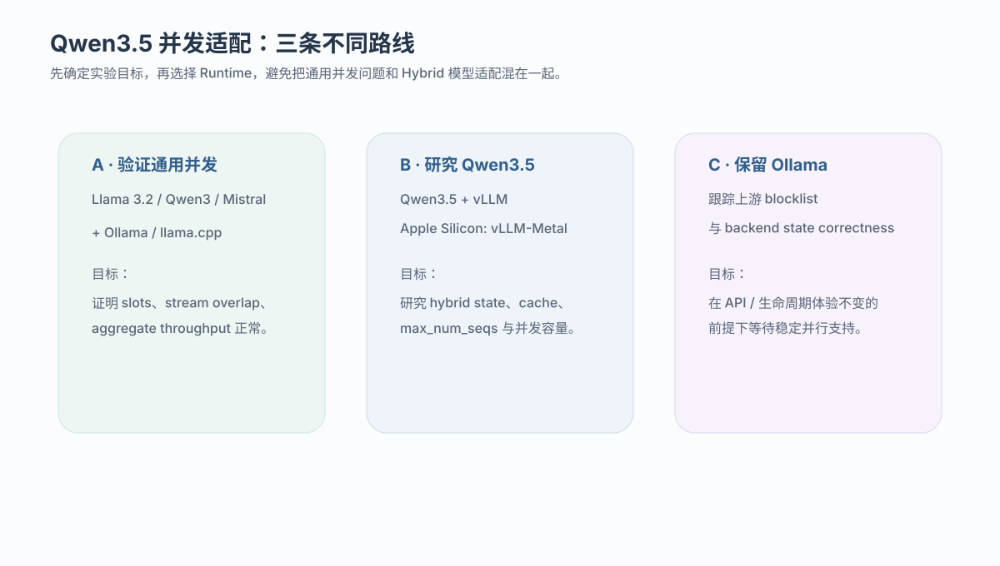
13.1 路径 A：先用标准模型验证 Serving 并发链
如果目标是验证 Ollama / llama.cpp 的多请求行为，可以先选择普通、轻量、当前不在显式 blocklist 中的文本模型。这样可以把客户端并发、slot、Continuous Batching 与 GPU 利用率先验证清楚。
13.2 路径 B：研究 Qwen3.5 本身的多请求 Serving
若重点是 Qwen3.5 hybrid state 在并发下的调度与内存行为，更适合使用明确支持 Qwen3.5 的 Serving Engine。例如当前 vLLM 支持 Qwen3.5 / Qwen3.5-MoE；Apple Silicon 上 vLLM-Metal 的支持矩阵也列出 Qwen3.5 / 3.6 / 3.8，采用 Hybrid SDPA + GDN linear 路径。
13.3 路径 C：必须保留 Ollama 接口与生命周期管理
这一路线需要关注 Ollama 上游 blocklist 是否解除、llama.cpp hybrid state correctness 是否稳定，以及特定后端的并发实现是否成熟。它更依赖 Runtime 版本，而不是简单调整一个环境变量。
13.4 不建议直接绕过安全限制作为正式方案
手工移除 blocklist 可以用于研究性 A/B 测试，但绕过保护后必须额外验证：长时间压力下是否崩溃、slot reuse 后输出是否一致、prompt cache 是否引入状态漂移，以及不同上下文长度和后端是否仍稳定。
哪些模型最适合观察“真正的并发现象”？
验证 Serving 并发时，第一阶段更需要“轻量、稳定、容易观察”，而不是优先选择最大或最新的模型。模型越大，越容易让实验首先被显存容量、swap 或 OOM 干扰。
| 实验目的 | 建议模型 / Runtime | 原因 |
|---|---|---|
| 快速验证 Ollama 多请求 | Llama 3.2 1B / 3B | 模型较小，加载与并发实验成本低，适合作为基础 Serving 行为基线。 |
| Qwen 家族对照 | Qwen3 0.6B / 4B / 8B | 可与 Qwen3.5 对照 Runtime 行为，区分“通用并发”与“Hybrid 架构限制”。 |
| 标准文本基线 | Mistral 7B | 成熟、常见，适合观察 slots、batching 与 KV 压力。 |
| 研究 Qwen3.5 Hybrid Serving | Qwen3.5 + vLLM / vLLM-Metal | 更适合观察 hybrid recurrent state、max_num_seqs、paged cache 与并发容量。 |
如何证明发生的是“真正的并发”，而不是同时排队？
单看“总耗时变短”或“同时发出了四个 HTTP 请求”都不够。更可靠的验证需要客户端、Runtime 与 GPU 三层证据互相印证。
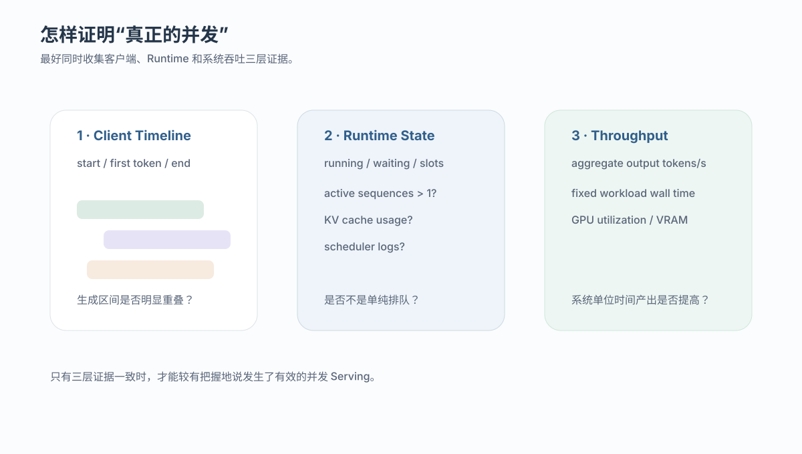
15.1 客户端：Streaming 时间区间是否重叠？
每个请求记录 start_time、first_token_time 与 end_time。若多个请求在同一时间区间持续返回 token，至少说明服务端不是严格 request-level 串行。
15.2 Runtime：是否同时存在多个 Running Request / Slot？
vLLM 可观察 running / waiting requests、KV cache usage 等 metrics；llama.cpp / Ollama 可结合日志观察 parallel、slot id、请求状态与模型加载参数。
15.3 GPU / 系统：Aggregate Throughput 是否提升？
固定一组相同请求，比较 concurrency=1 与 concurrency=N 的总完成时间和 aggregate output tokens/s。单请求 TPOT 可能变慢，但如果相同任务集整体更快完成，则说明共享执行确实提高了系统吞吐。
| 组 | 设置 | 回答的问题 |
|---|---|---|
| A | concurrency=1 + 小型标准模型 | 单请求延迟、tok/s、显存基线 |
| B | concurrency=4 + 同一标准模型 | Runtime 是否支持多请求重叠，aggregate throughput 是否提高 |
| C | concurrency=4 + Qwen3.5 + Ollama | 是否触发当前 qwen35 parallel=1 保护 |
| D | concurrency=4 + Qwen3.5 + vLLM / vLLM-Metal | Hybrid 模型在另一 Serving Engine 下的多请求行为 |
统一排查框架：从“请求变慢”定位到真正的 Serving 瓶颈
1. 请求是否在客户端被串行提交？
↓
2. 服务端是否只是把并发请求放进 waiting queue？
↓
3. Runtime 是否允许多个 active sequences / slots？
↓
4. generation iteration 是否支持 Continuous Batching？
↓
5. KV Cache / recurrent state 是否有足够容量？
↓
6. Prefill 与 Decode 的调度是否合理？
↓
7. 模型架构是否存在 Runtime 兼容性限制？
↓
8. Aggregate throughput、TTFT、ITL 与 tail latency 是否达到目标？还可以继续延伸的 Serving 问题
- Prefix Caching：大量请求共享 system prompt、RAG 文档前缀时，如何减少重复 Prefill；
- Disaggregated Prefill / Decode：两个资源画像不同的阶段是否应该拆到不同 worker 或设备；
- Speculative Decoding：加速单请求 Decode 后，如何与 Batching、状态 rollback 和多序列调度协同；
- SLO-aware Scheduling：不只最大化吞吐，而是显式控制 TTFT / ITL / p99；
- Multi-model Serving：多个模型共享 GPU 时的模型加载、placement、keep-alive 与请求路由；
- Hybrid State Serving：当模型不再只有 KV Cache，而同时含 recurrent / SSM state 时，传统 KV-only Serving 假设需要如何扩展。
参考资料
Iteration-Level Scheduling、Selective Batching 与 Transformer Serving。
KV Cache 碎片、block-based memory management 与高吞吐 Serving。
Continuous Batching、Chunked Prefill、Prefix Caching、模型支持与运行参数。
当前模型并行限制、NumParallel 与调度入口。
Qwen3.5 hybrid attention 在 parallel load / slot reuse 下的 context checkpoint 问题。
Qwen3.5 hybrid architecture 与模型实现说明。
Qwen3.5 与 Qwen3.5-MoE 的当前支持状态。
Apple Silicon 上 Qwen3.5 / 3.6 / 3.8 Hybrid SDPA + GDN linear 支持矩阵。